Research
VLSI Design and Implementation of On-Line Ensemble Local Mean Decomposition
June.2013 - present
Independent Research, Advisor: Prof. Shao-Yi Chien (department of EE)
- Developed extended Sliding Local Mean Decomposition (eSLMD), an on-line version of LMD.
- Proved through Matlab simulations that eSLMD has better decomposition performance, quantified by mean square error, than conventional LMD, and is well suited for real-time biomedical applications.
- Paper Accepted and presented in the poster session of IEEE Biomedical Circuits and Systems Conference (BioCAS 2014), Lausanne, Switzerland. [LINK]
- Designed an on-line LMD processor with 2.28mW total power, 2.33mm2 core area, and 4.9ms computational latency for wearable biomedical applications.
- Paper accepted and presented in the oral session of IEEE Conference on Electron Devices and Solid-State Circuits (EDSSC 2015), Singapore. [LINK] [SLIDE]
- Enhanced on-line ensemble LMD algorithm by massively reducing computational loading through exploiting algorithmic characteristics.
- Designed an on-line ensemble LMD processor with 3.72mW total power, 2.42mm2 core area, and 19.6ms computational latency.
- Paper submitted to IEEE Symposium on Circuits and Systems (ISCAS 2016), Montreal, Canada.
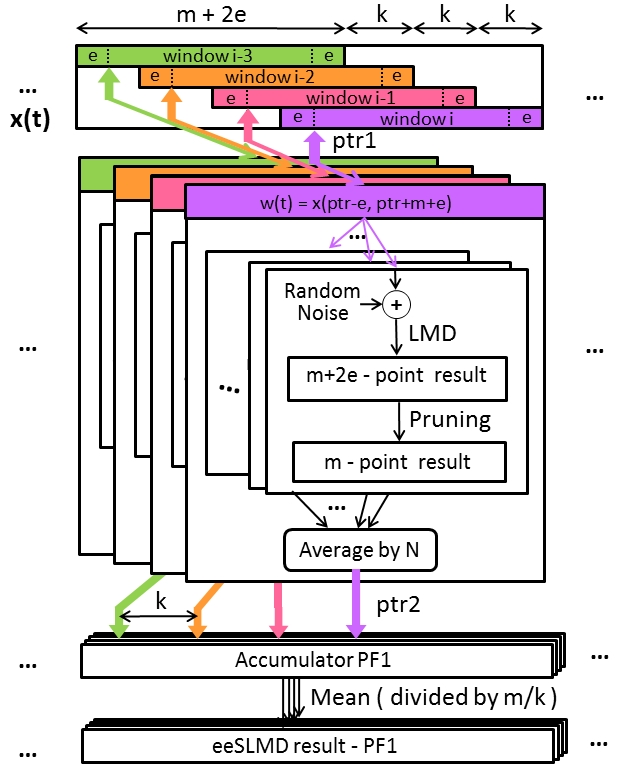
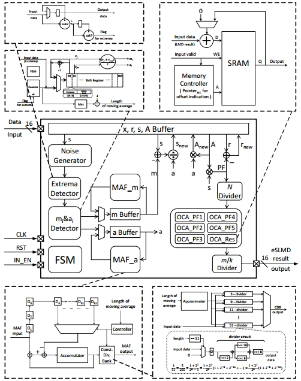
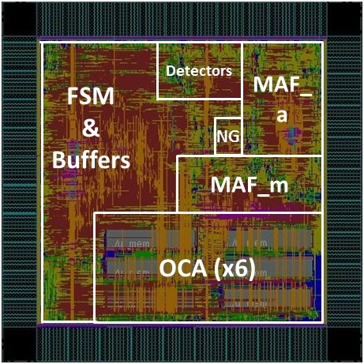
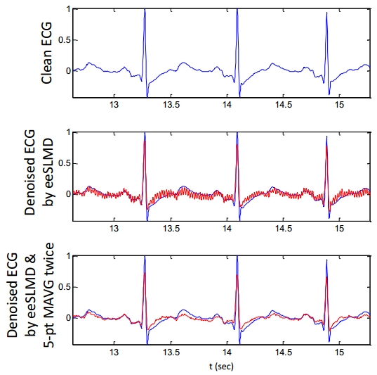
 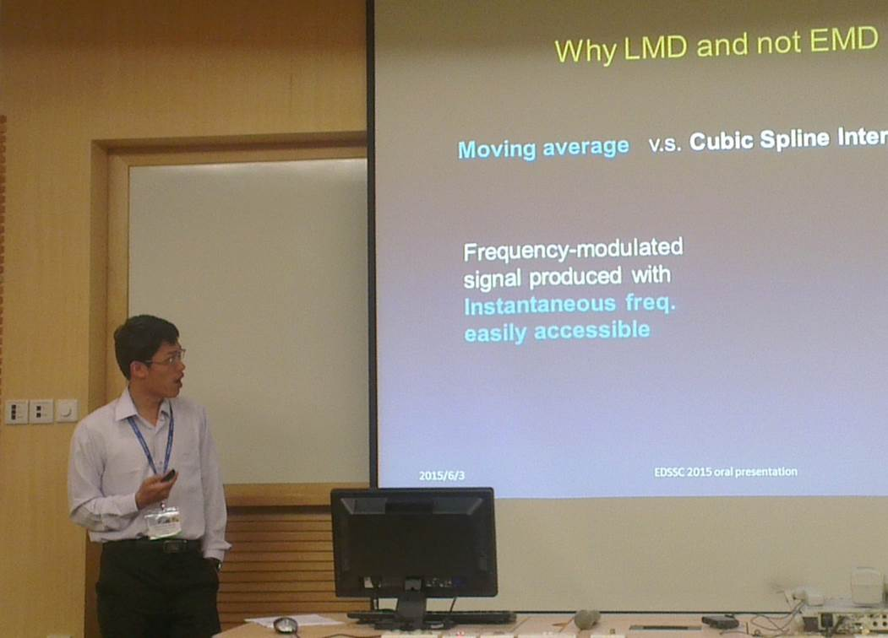
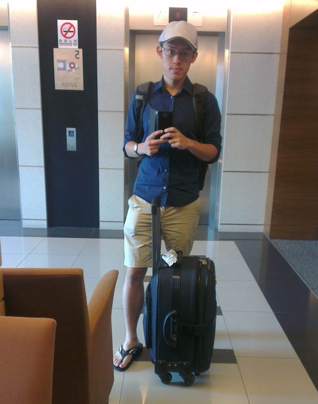
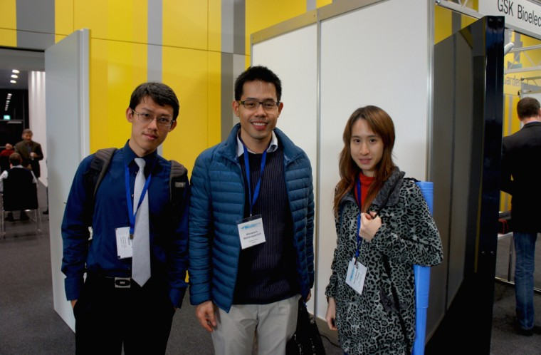
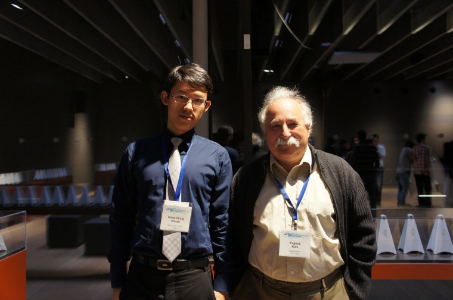
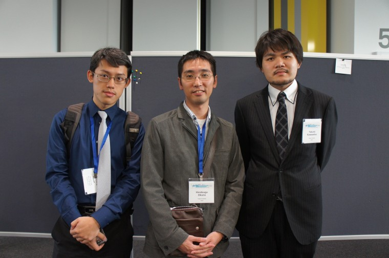
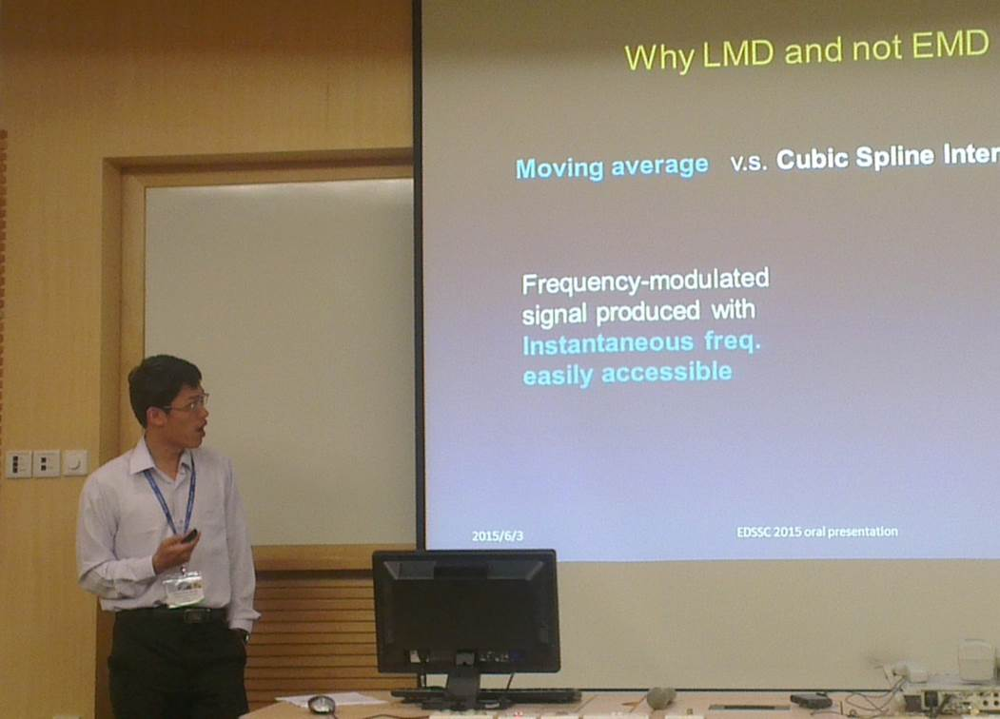
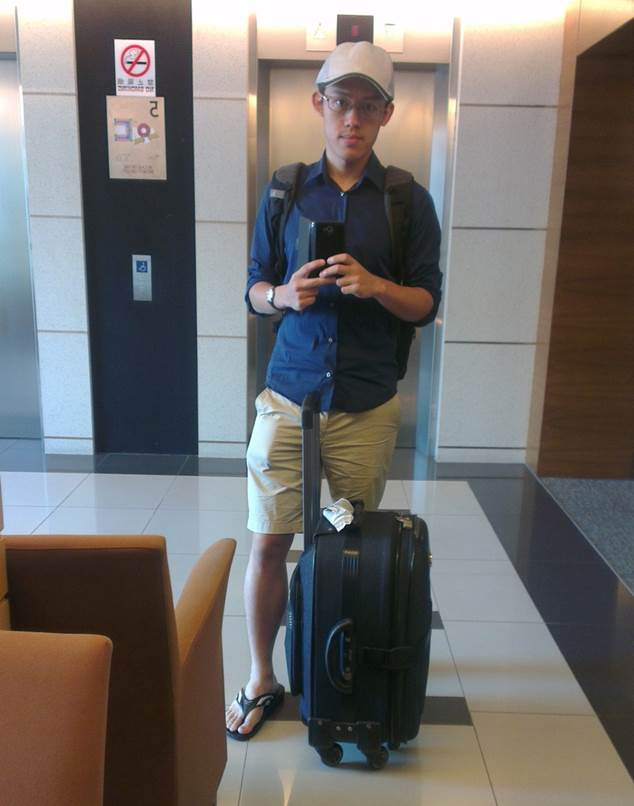
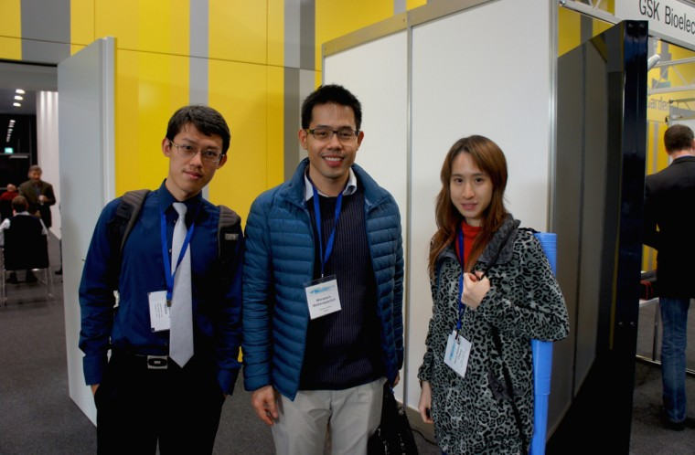
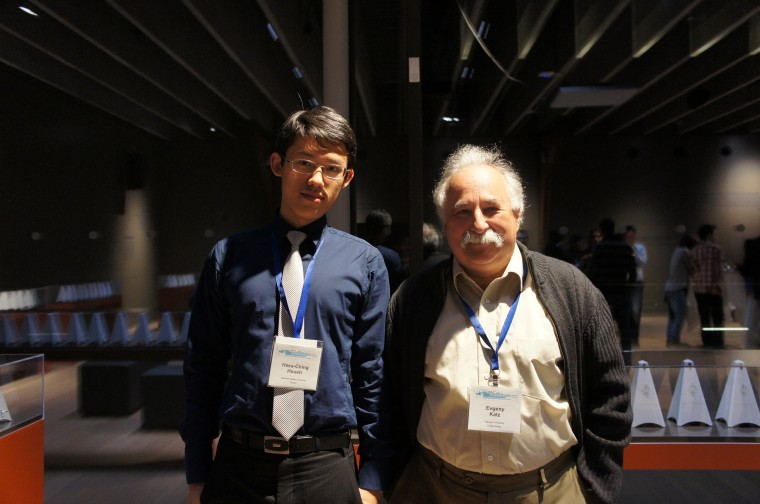
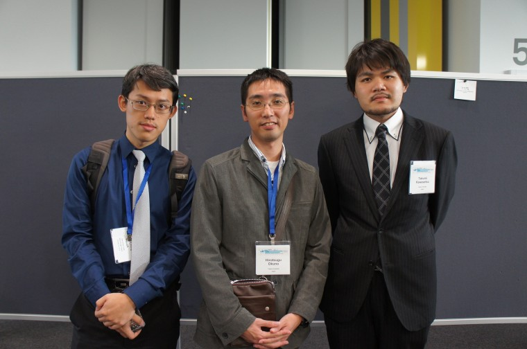
Smart Kinesiology Tape
Sep. 2014 – July 2015
Project leader, Advisor: Prof. Polly Huang
- Surveyed various aspects of developing small wearable devices, including low-power communication techniques, energy harvesting techniques, and market analysis.
- Attended training courses and earned a certificate on basic muscular system anatomy and taping techniques.
- Crafted a complete plan of Smart Kinesiology Tape development, including design partition, possible applications, and
- Implemented an sensor prototype that records and visualizes stretching levels of the tape via Arduino.
EyeWatch - Enabling Gesture-Based Interaction on Palm with a Wrist-Worn Sensor
July.2014 - Dec.2014
Team member, Advisor: Prof. Mike Y. Chen (department of CSIE)
- Exploring the user experience of using palm as an touchpad/drawpad, and discovering the underlying rules and compiling them as a list of guidelines.
- Designing wearable devices with sensors that enables gesture-based interaction on palm or back of our hand.
- Won 2nd prize of Smart Handheld Device User Experience Design and Implementation category, 2014 Mobilehero Competition, Taiwan, and attracted attention from industry as well as from startup accelerators.
MotionMixer - Make DJ Intuitive
May.2014 - June.2014
Project Leader, with Yu-Jia Huang and Po-Hsien Chu, Course Final Project of Networking and Multimedia Lab
- Designed and implemented a handheld device and a dedicated iOS application that can play music and various DJ sound effects according to user's hand movements
- Used Arduino UNO, RedBearLab BLE shield and MPU6050 3-axis gyroscope and accelerometer to implement the handheld device
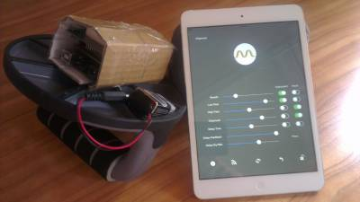
Hand-Tracking Quadcopter
Fall 2013
Co-Project Leader, with 徐祥 and 侯宗誠, Team Project of Digital Circuit Experiment Class,
Instructor: Prof. Shao-Yi Chien
- Developed a hand-motion-guided flying pet system, including a handheld device, a processing core with a hacked quadcopter remote control, and a quadcopter.
- Used Arduino Uno, Bluetooth shield and accel/gyro sensor for the handheld device and an Altera DE2-115 FPGA board with another Arduino Uno and BT shield for the processing core.
- Hacked quadcopter RC such that signals from the core can be "force-fed" into it through DAC circuits.
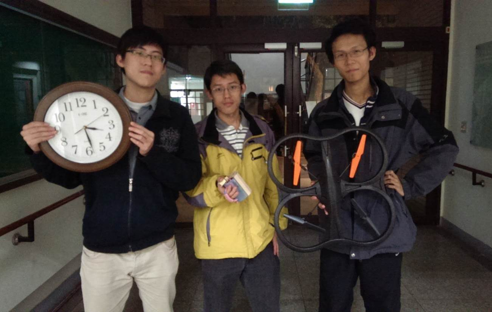
 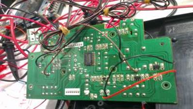
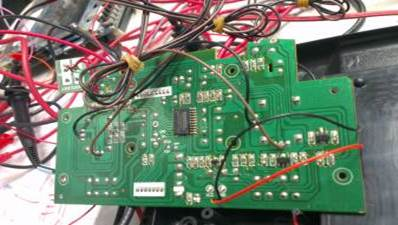
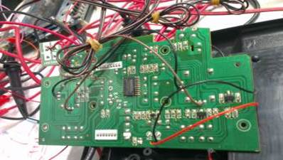
Smartphone-Based Electric Piano - lightweight & authentic velocity/volume mapping
Nov. 2012 - April. 2013
Project Leader, with Yu-Jia Huang, Work Submitted to 13th Macronix Golden Silicon Awards Semiconductor Design and Application Competition
- Developed a wireless piano system including a handmade piano keypad and an dedicated iOS application.
- Used MSP430 dev. board to compute velocities of keys being pressed, translate to volume and send data to iPhone through a hacked Wi-Fi router.

 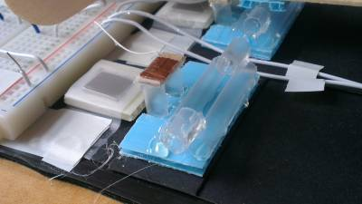
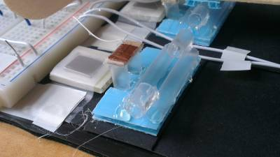
VLSI Implementation of Discrete Cosine Transform Engine
Fall 2012
Independent Coursework of Computer-Aided VLSI System Design (CVSD) Class
- Developed a VLSI chip for processing two-dimensional DCT using row-column decomposition algorithm using the hardware architecutre proposed by Madisetti et al. in 1995.
- Performed successfully post-synthesis simulation with maximum clock rate reaching 250MHz, and with dynamic power estimated to be 13.4mW.